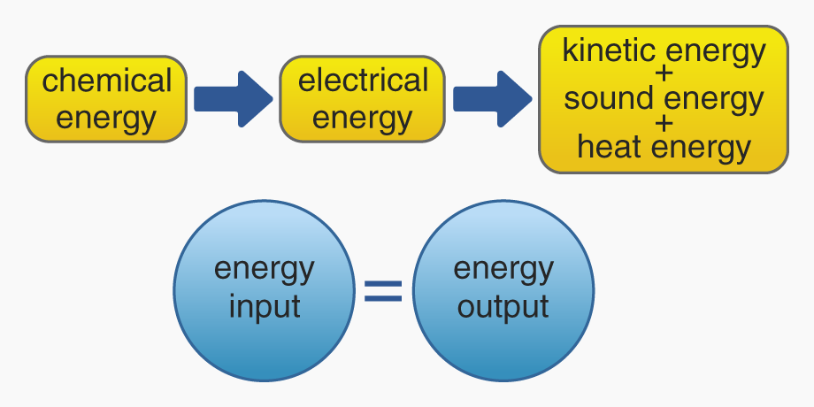
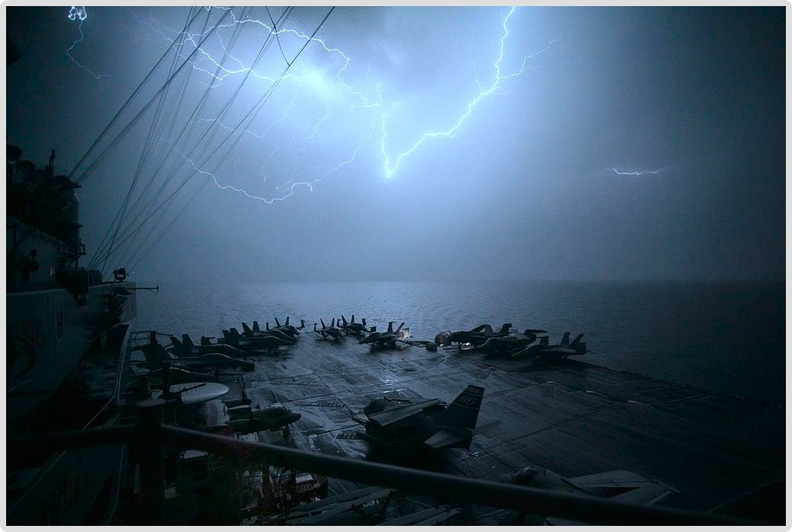
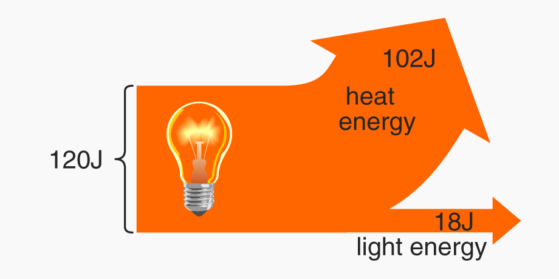
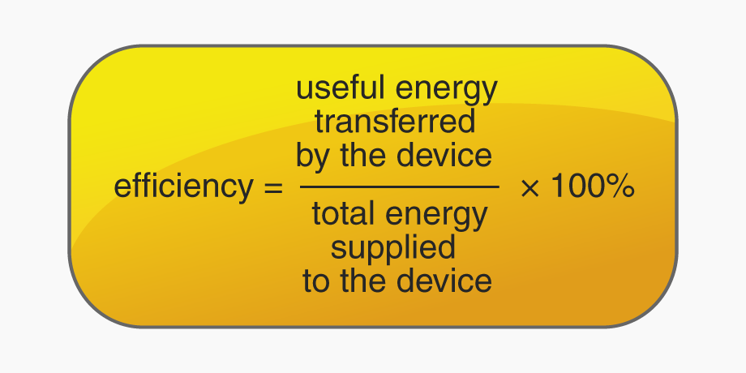
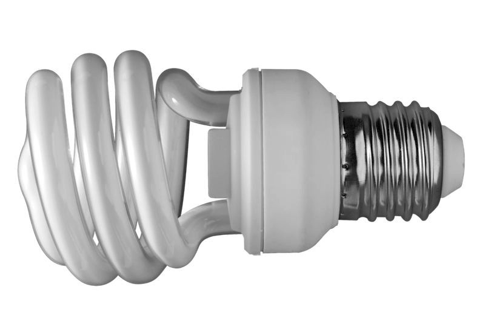

Energy is measured in joules. A joule is defined as the energy needed to lift 1 Newton of weight (1N) by 1 metre.
Energy cannot be created and it cannot be destroyed, it can only change its form. This is the law of conservation of energy. The total energy in a system, before and after a transfer of energy, is the same.
For example, a battery-powered toy car converts chemical energy in the battery to electrical energy that drives the motor, to kinetic energy that moves the car. It also produces sound energy in the wheels/motor, and heat energy in these too, due to friction:

Energy is therefore stored and transferred in different forms. There are several forms of energy:
Name
Description
Electrical energy
Energy transmitted in man-made electric currents or in natural phenomena like lightning.
Chemical energy
Energy that can be released in a chemical reaction. Example forms of storage are food and fuels.
Gravitational potential energy
The energy stored in an object which can be released via gravity if the object falls.
Elastic potential energy
The energy stored in objects that have ‘springy’ properties when they are stretched and/or compressed.
Kinetic energy
The potential energy in the nucleus of an atom, e.g. uranium.
Nuclear energy
The energy stored in an object which can be released via gravity if the object falls.
Sound and light and heat energy
For example, the light and heat and thunder sound produced by lightning.

Electrical energy occurs naturally, such as in lightning, a powerful example of energy transfer that also produces light, sound and heat. This photo was taken on a US aircraft carrier in 2007
Energy efficiency
Even though energy is always conserved in a system, it is sometimes transferred to unwanted forms. Energy is said to be wasted when it is transferred in a way that is of no use to us. Energy efficiency is achieved when energy is in a form that does something useful for us.
On a public bus, the heat emitted by the engine is a waste: it is transferred to the air where we can no longer harness it. It would be more useful if this energy moved the bus, adding to its kinetic energy. The same is true for the engine’s sound energy, and the air resistance as the bus moves.
A Sankey diagram shows proportionally how much energy is transferred in a device or system. It visually represents wasted and useful energy, because the widths of the arrows are exactly proportional to the energy they represent:

Calculating energy efficiency: The energy efficiency of a machine or device, e.g. an electrical appliance, is calculated as a percentage:

Example The Sankey diagram above shows the energy supplied to and transferred by an old-style ‘filament’ light bulb. The light bulb’s efficiency is:Notice that this calculation requires us to look at the useful energy produced by the bulb, i.e. only the light energy.
Modern light bulbs – such as the compact fluorescent lamp (CFL) shown here – are more energy efficient, partly because they give off less heat.

We can create other heat efficiencies in things like car engines by lubricating moving parts to reduce friction; in electric circuits we can use low-resistance wires to reduce heat.
Because energy can neither be created nor destroyed, the maximum efficiency of a machine or device cannot be more than 100%.